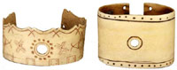

Native
America and the first millionaire of the West
The collectors
John Mullanphy was from near Enniskillen in northern
Ireland. He migrated to the United States in 1793,
and settled in Baltimore. Later he assisted Andrew
Jackson, whose parents were from County Antrim,
to defend the city against the British during the
War of 1812. Mullanphy 'The first millionaire of
the American west', sent his son Bryan to France
and England to be educated at Stonyhurst College,
Lancashire. In 1825 16 year old Bryan Mullanphy
brought 15 Native American artworks to the school,
where they remained until 1977 when they were lent
to the British Museum. Bryan Mullanphy served as
Mayor of St. Louis in 1847-8, and, as a successful
entrepreneur, was an important philanthropist, endowing
a hospital and other charities.
|
|  |
Two bent elk-antler wrist-protectors
or bracelets, Plains Indian before 1825. Mullanphy
collection.
click
image for more info |
|
The Jesuit connection
The work of the Jesuit order was characterised from the
outset in the 16th century by an intellectual curiosity
that encompassed science, philosophy and geography. In
the 17th century the Jesuit Relations from Canada and
New York provided the first comprehensive data about Native
America. Joseph-François Lafitau in 1724 published
the first ethnography, of Iroquoian peoples Moeurs
des Sauvages, described in comparison to the classical
and biblical ancients. In the early 1820s the Jesuits
arrived in Missouri, set themselves up in Florissant,
where the Mullanphys had property. The most famous missionary
was Pierre-Jean de Smet, an associate of Bryan Mullanphy,
who was in touch with Stonyhurst College.
Stonyhurst, like other Jesuit institutions, acquired
great collections of books and art, for scholarly purposes,
including other Native American items.
Engraving from Lafitau's Moeurs
des
Sauvages
1724.
Pictoral Collection, Department
of Ethnography, The British Museum
click
image for more info
Links
Missouri
Historical Society
Stonyhurst
College
Ulster
American Folk Park
Ulster
Museum
Fermanagh
County Museum at Enniskillen Castle
Catholic
Archdiocese of St. Louis
Smithsonian
National Museum of the American Indian
Smithsonian
National Museum of Natural History
The
British Museum, North American Collections
|